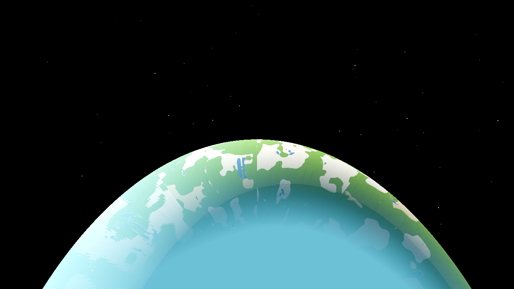
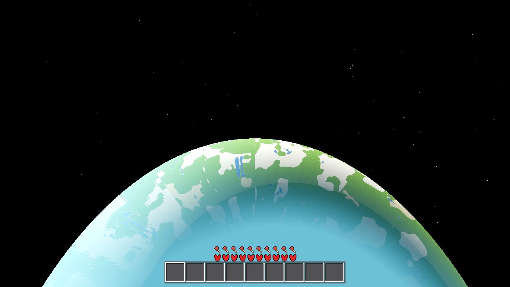

2026-10-04 · instrumentation + one camera preset · no game-behaviour change · no commits · shared ticket (TASKS.yaml untouched)
python3 tasks/scripts/gate_census.py LOG… counts SCRIPT ERROR AND SHADER ERROR lines per run log (anchored: ^SHADER ERROR: — an arm RESULT quoting the phrase no longer false-positives; first cut of it counted its own note line) and names each shader error — the res:// path from the engine's at: line, else the GDScript call site from the block's backtrace. G0 is now zero SCRIPT AND zero SHADER ERROR (a broken shader draws the engine fallback material and the process still exits 0 — verified: every negative run below exited rc=0). Rule written into HARNESS.md §4/§5 and the awecraft-run-verify skill.AWECRAFT_LOGIC=shaderforce (_shaderforce_test`, harness.gd) — it must force because shaders compile lazily (a run that never builds a material reports zero shader errors while the shader is broken; the coordinator's earlier clean-looking Forward+ check was a false pass on exactly that). The arm globbed every shipped .gdshader (12, res://core+res://world, so a new one lands for free), forces each through the live renderer (material on a probe mesh in the main viewport; the one sky shader rides the scene sky), and judges each IN-ENGINE: (a) parse state — rendered parameter list vs declared uniforms (the silently dropped shader parses to zero while its text declares some); (b) draw state — 5-sample centre pixel readback (the engine fallback is a flat 0.2078 grey, measured 2026-10-04 under this path). Clean run: 12/12 ok, RESULT ok:true, census 0/0 (log: .scratch/AC-0396/shaderforce_clean.log).shaderforce row of tasks/harness_data.yaml (rendered, --check clean) + HARNESS.md §1/§4. SHIPPED FORWARD+ PATH ONLY — the headless dummy renderer never compiles the backend stage, so the check cannot run headless.render_mode …, transparent injected into core/cloud_layer.gdshader → log: SHADER ERROR: Invalid render mode: 'transparent'. at: (null) (res://core/cloud_layer.gdshader:2) + backtrace [0] _setup_aero (res://scenes/main.gd:1049); census FAIL (SHADER ERROR 1, names the shader); arm: SHADERFORCE … cloud_layer declared=10 params=0 verdict=params_mismatch, RESULT ok:false failed:[cloud_layer]; engine rc=0 (the trap).# comment as line 1 of core/satellite_body.gdshader (the AC-0391 defect 1 class) → zero SHADER ERROR lines in the log (census: ok) BUT the arm: SHADERFORCE … satellite_body declared=7 params=0 verdict=params_mismatch, RESULT ok:false failed:[satellite_body]. The arm is the only detector of this class — that is why the check is in-engine, not just a log count.git diff clean); a final clean re-run after restore: 12/12 ok, census 0/0 (shaderforce_restored.log). During this ticket the arm also caught 5 leftover temp probe shaders from AC-0394-era probing on its first real run (17 scanned, 2 flagged) — deleted, re-run clean.AWECRAFT_CAM=planet (harness.gd, between eyeup and sandpad) — self-contained like shaft (own snapshot + quit; a bare 4-step branch would be silently overridden by the on-demand player spawn making the PLAYER camera current — AC-0152/0160 finding). It flies a FROZEN player to the camera position (the body's visibility + uniforms ride the player's altitude — satellite_body.gd _tick_view), waits the body LOADED + 12 frames + AWECRAFT_SNAP_DRAIN, and aims at the tangent limb.(spawn − centre).normalized(), centre (0, −R, 0) — the exact pair the satellite body uses (satellite_body.gd:90 var R, :265 position = Vector3(0,-R,0)). R's single source is Game.planet_R — godot/autoload/game.gd:63 (var planet_R := 4000.0; reset in new_world game.gd:79; clamped 2000–8000 on the save path at main.gd:537) — passed to the body at world.gd:4768 satellite.configure(…, Game.planet_R, …) → satellite_body.gd:254 R = p_R. The preset reads Game.planet_R directly; no constant is guessed. Altitude: AWECRAFT_SAT_ALT (default 2000 m, above the body's full-establishment height; 668/3000 reproduce AC-0391's two shots). Far plane = the body's own formula h_band + 2·(R+SEA) + 200.tasks/AC-0396/planet_limb_2000m.png (1280×720) — boot line Vulkan 1.4.318 - Forward+ - … llvmpipe, RESULT {"planet":true,"cam":"planet","alt":2000.0,"R":4000.0,"body_phase":4(LOADED),…}, census 0/0, run ~5 min. Recipe: fwdshot shell + AWECRAFT_RADIUS=4 AWECRAFT_TIME=0.5 AWECRAFT_SNAP_DRAIN=600 AWECRAFT_NO_FOG=1 AWECRAFT_CLOUDS=0 (NO_FOG: the engine env fog would repaint the km-out body in the fog colour — the body's own dissolve is camera-distance driven and stays correct; CLOUDS=0 keeps the 275–400 m cloud shells off the disc), NO logic arm, NO menu boot. [PNG verification below]g0.log) · full battery 8 modes + summary ok:true (370 s, battery.log, census 0/0) · genhash 25/25 byte-identical to the newest tree reference (.scratch/ac0394/g0_genhash.log; the AC-0292 baseline in the standing row was superseded by later generation tickets — verified against the newest, not the stale, ref) · shaderforce clean 12/12 + census 0/0 · negatives A+B red as required, restore green.Debug.snap printed SNAP path 1280x720 even when save_png failed (first capture run: engine ERROR: Can't save PNG at path — the directory didn't exist — yet the SNAP line claimed it). It now prints SNAP FAIL path err=N + push_error and skips the claim. No other game code touched; main.gd/game.gd/drop.gd (the other session's files) are read-only — the self-contained preset pattern needed no change there.G0's rule is zero SCRIPT ERROR lines, not rc=0 — the engine exits 0 when scripts fail to compile. AC-0396 adds the twin: zero SHADER ERROR lines. A shader that fails to compile is replaced by the engine's fallback material and the process still exits 0; the only trace is the log line, and for a week nothing read it (the satellite shader's white-disc defect AC-0391 found had been printed on every run since the shader shipped).
Helper: tasks/scripts/gate_census.py (stdlib only):
python3 tasks/scripts/gate_census.py <run log> [<run log> …] # per log: counts SCRIPT ERROR + SHADER ERROR lines (anchored ^…ERROR:), # names each shader error (res:// path from the `at:` line, else the first # GDScript call site in the block's backtrace), exits non-zero on any > 0. python3 tasks/scripts/gate_census.py --allow-script N --allow-shader M …
Anchoring matters: the engine prints SHADER ERROR: … at line start; a substring count false-positived on this arm's own RESULT note (which quotes the phrase) on the very first clean run. The anchored form (^\s*SHADER ERROR:) was validated against: the clean log (0/0), a broken log (2, both named), G0 and battery (0/0).
Each engine error block carries its attribution — file shaders name the res:// path on the at: line; embedded (in-code set_code) shaders carry no path, so the backtrace's first GDScript frame names the call site. Both forms, as produced live by Negative A:
SHADER ERROR: Invalid render mode: 'transparent'.
at: (null) (res://core/cloud_layer.gdshader:2)
GDScript backtrace (most recent call first):
[0] _setup_aero (res://scenes/main.gd:1049)
…
.scratch/AC-0396/shaderforce_negA.log: SCRIPT ERROR 0 (allow 0), SHADER ERROR 1 (allow 0) FAIL
line 10: res://core/cloud_layer.gdshader:2
Where it is wired: HARNESS.md §4 recipe (census on the G0 log + any run log + the shaderforce recipe), §5 G0 definition, the awecraft-run-verify skill tier table, the shaderforce/fwdshot rows of tasks/harness_data.yaml (rendered into HARNESS.md §1, --check clean).
AWECRAFT_LOGIC=shaderforce)Why force: shaders compile lazily — the backend stage is compiled when a material is first built. A run that never builds the material reports zero shader errors while the shader is broken (the coordinator's Forward+ check passed exactly that way), and the headless dummy renderer never compiles the backend stage at all. So: the arm FORCES every shipped shader in front of the live renderer, on the shipped Forward+ path, and judges each in-engine — because one failure class produces no log line at all.
The rig: a probe Camera3D + 40×40×1 BoxMesh (box 12 m in front of the camera, high above the terrain at the world origin) added under main; each shader is put in front of the renderer (material override on the box; the one shader_type sky shader rides the scene sky), ~12 process frames + frame_post_draw, then a 5-sample pixel readback (centre ±30 px).
The per-shader verdicts:
| Signal | What it catches | Log trace |
|---|---|---|
params_mismatch: declared uniforms (source text) > rendered parameter list (RenderingServer.get_shader_parameter_list) | a silently dropped file (first-line # → parses to ZERO parameters while the text declares some) AND any parse failure | silent class: NONE; loud class: SHADER ERROR + at: line |
fallback_material: all 5 samples flat within 0.03 AND on the measured fallback grey 0.2078 | a shader that compiles but draws the engine fallback material | none |
Shipped set: 12 shaders, all declare ≥1 uniform (1–12) → the parameter check covers the whole set today; the pixel check is the second layer for future zero-uniform shaders. (A shader whose default-uniform output is transparent — the cloud/fluid/star classes — shows the scene behind it; that is a valid compiled-and-ran state, and the parameter check still guards it. The probe runs with DEFAULT uniforms: the compile state is the subject; semantic correctness is the satellite arm's numeric-twin job.)
SHADERFORCE res://core/aero_sky_gradient.gdshader declared=12 params=12 sky=true verdict=ok
SHADERFORCE res://core/aero_wash.gdshader declared=4 params=4 sky=false verdict=ok
SHADERFORCE res://core/cloud_layer.gdshader declared=10 params=10 sky=false verdict=ok
SHADERFORCE res://core/fluid_anim.gdshader declared=8 params=8 sky=false verdict=ok
SHADERFORCE res://core/fluid_anim_bf.gdshader declared=8 params=8 sky=false verdict=ok
SHADERFORCE res://core/lod_avg.gdshader declared=1 params=1 sky=false verdict=ok
SHADERFORCE res://core/satellite_body.gdshader declared=7 params=7 sky=false verdict=ok
SHADERFORCE res://core/star.gdshader declared=6 params=6 sky=false verdict=ok
SHADERFORCE res://world/chunk_lit_cutout.gdshader declared=6 params=6 sky=false verdict=ok
SHADERFORCE res://world/chunk_lit_flower.gdshader declared=6 params=6 sky=false verdict=ok
SHADERFORCE res://world/chunk_lit_fluid.gdshader declared=8 params=8 sky=false verdict=ok
SHADERFORCE res://world/chunk_lit_opaque.gdshader declared=6 params=6 sky=false verdict=ok
RESULT {"count":12,"failed":[],…,"ok":true,…,"wall_ms":27613}
.scratch/AC-0396/shaderforce_clean.log: SCRIPT ERROR 0 (allow 0), SHADER ERROR 0 (allow 0) ok
Boot line (the path assertion): Vulkan 1.4.318 - Forward+ - Using Device #0: Unknown - llvmpipe (LLVM 20.1.8, 256 bits).
# break: core/cloud_layer.gdshader line 2 → `render_mode unshaded, cull_back, fog_disabled, transparent;`
SHADER ERROR: Invalid render mode: 'transparent'.
at: (null) (res://core/cloud_layer.gdshader:2)
GDScript backtrace (most recent call first):
[0] _setup_aero (res://scenes/main.gd:1049)
SHADERFORCE res://core/cloud_layer.gdshader declared=10 params=0 sky=false verdict=params_mismatch
RESULT {"count":12,"failed":["res://core/cloud_layer.gdshader"],…,"ok":false,…}
.scratch/AC-0396/shaderforce_negA.log: … SHADER ERROR 1 (allow 0) FAIL → line 10: res://core/cloud_layer.gdshader:2
# engine rc=0 — the gate is the census + the arm, never the exit code
# break: `# AC-0396 negative test: this hash line swallows the whole shader silently` as line 1 of core/satellite_body.gdshader
# log: ZERO SHADER ERROR lines — census: ok (it cannot see this class)
SHADERFORCE res://core/satellite_body.gdshader declared=7 params=0 sky=false verdict=params_mismatch
RESULT {"count":12,"failed":["res://core/satellite_body.gdshader"],…,"ok":false,…}
# the arm is the only detector: this is why the check is in-engine, not just a log count
Restores: both shaders byte-identical after cp restore (git diff --stat empty); final clean re-run 12/12 ok + census 0/0 (shaderforce_restored.log).
AWECRAFT_CAM=planet)The view the satellite dissolve exists to be seen in: a camera at a stated altitude above the surface, looking at the limb (a ground-level shot cannot show the body — it is dissolved below the flight band by contract, AC-0310). Inserted in the preset chain (between eyeup and sandpad), self-contained like shaft: it flies a frozen player to the camera position, waits the body LOADED + 12 frames + AWECRAFT_SNAP_DRAIN frames, takes its own snapshot and quits. The frozen player is required anyway — the body's visibility and uniforms are driven by the PLAYER's altitude (satellite_body.gd _tick_view: h_band = |(ppos + (0,R,0))| − R), so no player ⇒ body hidden and uniforms never pushed.
R's single source: Game.planet_R — godot/autoload/game.gd:63 (var planet_R := 4000.0), reset in new_world (game.gd:79), clamped 2000–8000 on the save path (main.gd:537), passed to the body at world.gd:4768 satellite.configure(0, seed, Game.planet_R, HEIGHT, SEA) → satellite_body.gd:254 R = p_R → centre (0,−R,0) (satellite_body.gd:265). The preset reads Game.planet_R — not a guessed constant. Local up at spawn: (spawn − (0,−R,0)).normalized() — the exact pair the body uses.
Framing math: camera pl_pos = spawn + up·alt; the look target is the tangent point of the line of sight to the sphere of radius R (in the centre–camera plane: cos γ = R/|cam−cen|, sin γ = √(1−cos²γ), horizontal via a cross product with a fallback reference axis); up = the local radial (the body's own frame, not Vector3.UP); far = alt + 2·(R+SEA) + 200 (the body's own far formula — the preset camera needs its own, since the body only extends the PLAYER camera's far). At the default 2000 m: h_band ≈ 2142 ≫ h_first ≈ 32.6 (body fully established, op=1), far limb ≈ 10268 < far 10452 (no clip), nadir terrain 2000 m below the camera in front of the body surface (2016 m) → real terrain + textured disc both visible.
Capture recipe (shipped path): the fwdshot shell recipe + AWECRAFT_RADIUS=4 AWECRAFT_TIME=0.5 AWECRAFT_SNAP_DRAIN=600 AWECRAFT_NO_FOG=1 AWECRAFT_CLOUDS=0, NO AWECRAFT_LOGIC, NO AWECRAFT_MENU_BOOT (with any arm set the arm owns the shot; with MENU_BOOT the menu path's player camera owns it). NO_FOG because the engine env fog would repaint the km-out body in the fog colour (the body shader has no fog_disabled; its own dissolve is camera-distance driven and stays correct); CLOUDS=0 keeps the 275–400 m cloud shells (R+275..R+400) off the disc. AWECRAFT_SAT_ALT overrides the altitude (668/3000 reproduce AC-0391's two satellite shots).


main.inventory_ui for the capture (the inventory manages its children's visibility, never the layer's, so a one-shot hide holds); the re-run above is clean.First capture attempt, second failure: the engine printed ERROR: Can't save PNG at path (the tasks/AC-0396/ directory did not exist) while Debug.snap printed SNAP … 1280x720 anyway — the SNAP line is the "it was taken" claim, so it now fails loudly (SNAP FAIL path err=N + push_error) instead of claiming a file that does not exist.
| Gate | Result | Log |
|---|---|---|
| G0 (headless, zero SCRIPT AND zero SHADER ERROR) — final run on the delivered tree (after the debug.gd change) | 0 / 0, rc=0 | .scratch/AC-0396/g0_final.log (earlier: g0.log, same result) |
| Full battery (player, interact, light, fluids, buckets, genhash, settings, controls) + summary | ok:true, 370 s, census 0/0 | .scratch/AC-0396/battery.log |
| genhash parity | 25/25 byte-identical to the newest tree reference (.scratch/ac0394/g0_genhash.log) | genhash_new.txt vs genhash_ref_ac0394.txt (diff empty) |
| shaderforce clean (Forward+) | 12/12 ok, RESULT ok:true, census 0/0 | .scratch/AC-0396/shaderforce_clean.log |
| Negative A (loud) — break cloud_layer | census FAIL (names res://core/cloud_layer.gdshader:2) + arm ok:false params_mismatch — as required; engine rc=0 | .scratch/AC-0396/shaderforce_negA.log |
| Negative B (silent) — hash first line on satellite_body | arm ok:false params_mismatch with ZERO log lines (census ok) — as required; the class the census cannot see | .scratch/AC-0396/shaderforce_negB.log |
| Restore after negatives | both shaders byte-identical (git diff empty); re-run 12/12 ok, census 0/0 | .scratch/AC-0396/shaderforce_restored.log |
| Planet capture (Forward+) | boot line Forward+, RESULT planet:true body_phase=4(LOADED), census 0/0, PNG exists 1280×720 | .scratch/AC-0396/planet_capture.log |
godot/scenes/harness.gd — the planet preset branch (preset chain) + the shaderforce dispatch + _shaderforce_test (arm suite; inert during normal play, out of main.gd and the world per AC-0140)godot/autoload/debug.gd — snap() fails loudly on a failed save_png (was: claimed the snapshot anyway)tasks/scripts/gate_census.py — NEW: the SCRIPT+SHADER ERROR census helpertasks/harness_data.yaml — shaderforce row (entry/tests/result_fields/envs/wall/notes) + the fwdshot note updated to the standing zero-SHADER-ERROR rule → rendered via harness_doc.py --render, --check cleangodot/HARNESS.md — §1/§3 regenerated (shaderforce row); §2 AWECRAFT_CAM row gains planet (recipe + self-containment + the AC-0152/0160 trap); §4 G0 recipe gains the census + the shaderforce recipe; §5 G0 definition = zero SCRIPT AND zero SHADER ERROR.dsh/skills/awecraft-run-verify/SKILL.md — G0 tier = zero SCRIPT AND zero SHADER ERROR + the lazy-compile false-pass paragraphtasks/AC-0396/ — this page + planet_limb_2000m.png (the deliverable) + planet_limb_2000m_hud_overprint.png (first capture, kept as the HUD-trap evidence)Constraints held: instrumentation + one preset, no game-behaviour change; the other session's files (main.gd, game.gd, drop.gd) read-only — the self-contained preset needed no change in any of them; genhash 25/25; existing arms' RESULT fields unchanged; no R50; never the load arm; one godot at a time (pgrep before every call); no commits; TASKS.yaml untouched (shared ticket).